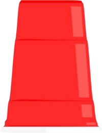

Decision-Making & Individual Differences
Why do people differ in how they decide? I study how far decision policies fall from the best speed–accuracy trade-off, and how selective and sustained attention control, working memory capacity, and fluid intelligence account for those differences.
Suboptimal decision-making
Deciding faster costs accuracy, and deciding carefully costs time. How far does each person’s decision policy fall from the best trade-off, and what keeps some people from getting closer?
Approach
Participants made lexical decisions while speed–accuracy emphasis and working memory load varied. I fit drift-diffusion models to separate evidence accumulation from response caution, and evaluate each person’s policy against the reward-rate optimum.
Try it: speed versus accuracy
Evidence builds up until it hits a boundary. Narrow boundaries give fast answers with more errors, wide ones give slower, more accurate answers. The curve shows correct answers per second, with your setting in black and the best one in teal.
A simplified drift-diffusion illustration with made-up parameters.
Methods & tools
- Behavioral experiments
- Drift-diffusion modeling
- Structural equation modeling
- Python
- R
- Speed–accuracy and load conditions designed by Alex Burgoyne
Status
This is the core of my dissertation. The work is ongoing and unpublished. The model estimates also feed the resting-state EEG project.
Hypothesis sampling
When people test ideas under uncertainty, some keep returning to explanations that have already been ruled out. Which cognitive abilities help people let go?
Approach
In a cups-and-marbles guessing task, feedback is only “correct” or “incorrect”. The key measure is resampling: re-testing a combination that already failed. Latent-variable models relate resampling to selective and sustained attention control, working memory capacity, and fluid intelligence.
Try it: the cup game
Each cup hides F, G, or H in a secret order. Guess one cup at a time, and after three guesses you only hear “Correct” or “Try again”. Use the buttons or your F, G, H keys.

Press start to play three short rounds.
Methods & tools
- Behavioral experiments
- Task design and programming
- Structural equation modeling
- MATLAB
- R
Status
The project has grown from a small pilot into a large-sample manuscript. In current analyses, working memory capacity adds little, and the attention control effect largely overlaps with fluid intelligence. The estimates are still being finalized.
- Psychonomic Society 2024: Individual differences in working memory capacity and general intelligence in hypothesis sampling behavior
- Psychonomic Society 2025: Unique contributions of fluid intelligence to hypothesis sampling behavior: Beyond attention control
- Background: Lee & Engle (2026), Journal of Intelligence. A conceptual paper that supplies the theoretical backdrop.